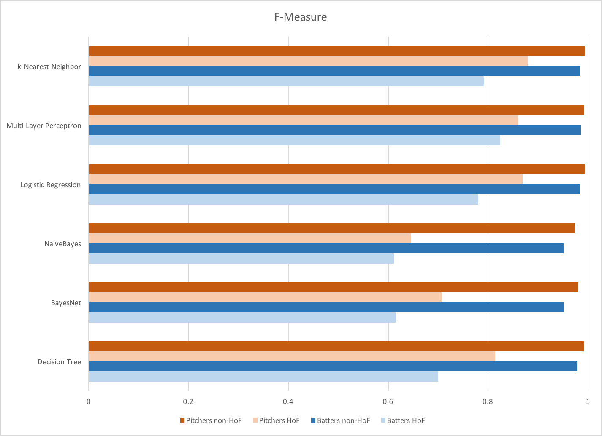

Final Project for Northwestern EECS 349
Every year, the Baseball Writers’ Association of America (BBWAA) vote on who is to be elected into the Baseball Hall of Fame. A player must receive 75% of the vote to be elected. There are many different criteria that the writers take into consideration when voting for a player. However, different writers value certain statistics differently. Since the vote is highly subjective, this is a debated topic each year. We believe that machine learning can be used to reveal trends in order to predict whether a player will be inducted.
We tested each set on multiple learners: decision trees, Bayes nets, naive Bayes, logistic regression, multi-layer perceptron, and nearest neighbor. For the pitchers, we looked at the following attributes: strikeouts, wins above replacement (WAR), games, complete games, shutouts, wins, losses, saves, innings pitched, earned run average (ERA), and fielding independent pitching. For the batters, we considered homeruns, WAR, games, runs, hits, runs batted in, walks, stolen bases, batting average, and on-base percentage plus slugging percentage.
We collected data from baseball-reference.com, dividing it into two different sets: pitchers and batters. We isolated players that played between 1961-2005 for our training set, and imposed minimum play requirements of 162 games for batters and 100 inning pitched for pitchers. In the end, our data set contained 1725 batters, 128 of which were inducted, and 1327 pitchers, 60 of which were inducted.
We chose to preference accuracy in classifying inductees over accuracy in classifying non-inductees, because the former is both more useful and more challenging. Therefore, the most important measure of success we identified for our models was the f-measure of classification of the Hall of Fame players. We tested our models on the 2016 Hall Of Fame ballot and used the classifications given by those predictions compared to the results of voting this year to gauge the accuracy of the model in practice.
f-measures for each model by class
Comparing them side by side, you can see that our k-Nearest-Neighbor model has the highest f-measure for HoF pitchers, and Multi-Layer Perceptron model has the highest f-measure for HoF batters. This also shows that, on average, our models were more accurate for pitcher than for batters.
We found that the multi-layer perceptron model was best for predicting whether batters would be inducted into the hall of fame, while k-nearest neighbor was the most reliable model for pitchers. WAR was the most significant indicator for a player’s chances of making it into the hall of fame, though WAR alone does not perform as well as our predictor, when our predictor considers WAR alone, its f-measure is 10% lower for batters and 20% lower for pitchers. When tested on the 2016 Hall of Fame ballot, our models performed reasonably well, correctly classifying the two players inducted this year and players projected to be inducted in the coming years.
Contact Email: taitmurphy2017@u.northwestern.edu